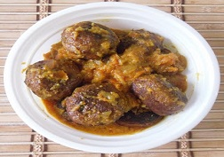

|  | Fish Kofta Curry Recipe is a delicious cuisine, dense gravy. This is a impeccable lunch or dinner leading course bowl and palates attractive with rice and a green salad or fruitarian lateral dish. |
Ingredients : Fish piece 500 gm, Onion 1 cup, Green chili 1 tablespoon, Coriander leaves 1 table spoon, Egg yolk-1, Cumin powder 1/2 teaspoon, Turmeric powder- 1/2 teaspoon, Garam masala powder- 1/2 teaspoon, Salt- 1/2 teaspoon as per required, Soy sauce- 1 tablespoon, Bread -1 piece, Oil- around 1/2 cup For Gravy, Onion paste- 3 tablespoon, Ginger paste-1/2 teaspoon, Garlic paste-1/2 teaspoon, Cardamom-2 piece, Cinnamon - 1 stick, Clove-2 piece, Bay leaves- 1 piece, Cumin powder- 1/2 teaspoon, Turmeric powder-1/2 teaspoon, Garam masala powder-1/4 teaspoon, Milk- 2 tablespoon, Nut paste-1 Tablespoon as required not necessary, Oil- 3 tablespoon, Coriander leaves- 1 tablespoon, Fried onion- 1 tablespoon. Method : keep 1 tablespoon oil in a pan or kadai and fish fry slightly on both side if completed save a side for till cool fish piece’s after that remove all bones of fish pieces and mash it with hand, now fry up chopped onion to the sunny brown color in the pan and mashed with fish. Add all ingredients of kofta except oil and mix it well. If necessary add compulsory substance and make round kofta. Heat oil in the pan or kadai to a medium flame, put kofta into it, wait 2/3 mint and then casual the other sideways, and fry all side to a nice color. Then take out from oil on a kitchen tissue to soak extra oil. Now make gravy for the kofta. Heat oil in a medium heat, saute the whole masala are ingredients also add onion paste, ginger paste, garlic paste, salt and all other masala and mixing it well. When oil separate from the mix insert milk and blending add 1/2 cup of water and take it to a boil. Then insert the kofta into the gravy and shield it for 4 mint and then turn off the stove. Garnish with coriander leaves and fried onion, and serve hot. |
||||

Crispy Pizza
Crispy Pizza and Pressed Panini authentic recipe One of the very famous Street Italian food.
Golden Chicken
Crispy and curried Golden chicken recipe for cooking Golden Chicken ghastly.